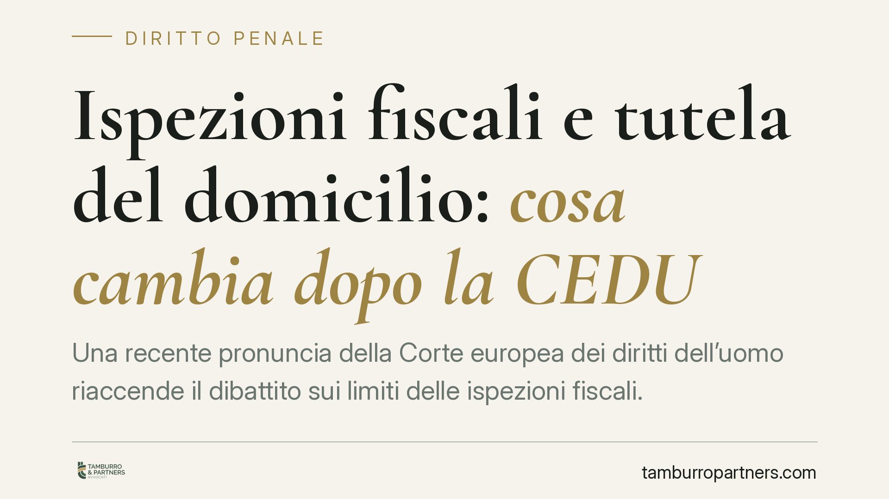

Ispezioni fiscali e tutela del domicilio: cosa cambia dopo la CEDU
Una recente pronuncia della Corte europea dei diritti dell'uomo riaccende il dibattito sui limiti delle ispezioni fiscali. Sotto esame la tutela del domicilio dell'articolo 8 CEDU: accessi e perquisizioni richiedono proporzionalità, motivazione concreta e un vaglio del giudice. Per imprese e professionisti la questione è concreta, perché tocca la validità degli accertamenti e l'utilizzabilità delle prove raccolte.

Il fatto
Una recente pronuncia della Corte europea dei diritti dell'uomo (CEDU) ha messo in discussione il modello italiano di accesso ispettivo in materia fiscale. La decisione – di cui invitiamo a verificare gli estremi esatti (caso, numero di ricorso e data) nelle banche dati ufficiali, non ancora consolidati al momento in cui scriviamo – muove dal principio di tutela del domicilio.
Il nodo è noto: in Italia gli accessi presso locali aziendali e, a certe condizioni, abitazioni private avvengono su autorizzazione amministrativa interna, senza un preventivo controllo del giudice. La Corte considera questo assetto potenzialmente non in linea con gli standard convenzionali.
Inquadramento normativo
L'articolo 8 della Convenzione europea dei diritti dell'uomo tutela la vita privata e il domicilio. L'ingerenza dello Stato è ammessa solo se prevista dalla legge, se persegue uno scopo legittimo e se è "necessaria in una società democratica". Da qui il cosiddetto test di necessità e proporzionalità: la misura deve essere adeguata allo scopo, non sostituibile con strumenti meno invasivi e accompagnata da garanzie effettive, tra cui un controllo giurisdizionale, anche successivo.
Sul piano interno, gli accessi fiscali trovano base nell'articolo 52 del DPR 633/1972 (IVA) e nell'articolo 33 del DPR 600/1973 (imposte dirette). Per i locali diversi dall'abitazione l'autorizzazione è del capo ufficio o del comando della Guardia di Finanza; per le abitazioni serve l'autorizzazione del procuratore della Repubblica. La CEDU segnala che la motivazione deve essere concreta e verificabile, non una formula di stile.
Sul versante delle prove, lo Statuto del contribuente (L. 212/2000), come modificato dal D.Lgs. 219/2023, ha introdotto disposizioni sul principio di non utilizzabilità degli elementi acquisiti in violazione di legge. La collocazione e la numerazione esatta della norma vanno riscontrate sul testo vigente dello Statuto, perché la riforma ha inserito più disposizioni in tema di prova. Secondo quanto risulterebbe, la Sezione Tributaria della Cassazione avrebbe rimesso alle Sezioni Unite la questione sull'inutilizzabilità delle prove irritualmente raccolte: anche in questo caso è opportuno verificare gli estremi dell'ordinanza interlocutoria prima di considerarla acquisita.
Implicazioni pratiche
Per imprese e professionisti il punto sensibile è duplice. Primo: un accesso privo di motivazione concreta o sproporzionato può essere contestato. Secondo: gli elementi raccolti in modo irrituale potrebbero risultare inutilizzabili, con effetti sull'intero accertamento.
Particolare attenzione merita il collegamento tra sede amministrativa e sede penale. Quando dagli accessi emergono ipotesi di reato – si pensi ai reati tributari – il materiale acquisito può confluire nel procedimento penale. Se l'acquisizione a monte è viziata, si apre la questione della sua utilizzabilità anche davanti al giudice penale: un tema che incide direttamente sulla strategia difensiva.
Sul piano interpretativo, si è sostenuta la tesi secondo cui i principi dell'articolo 8 CEDU potrebbero riflettersi su tutte le ispezioni amministrative, inclusi i controlli dell'Ispettorato del lavoro e, in prospettiva, quelli di Garante Privacy, Antitrust e ANAC. Va però mantenuta cautela: la pronuncia riguarda il contesto fiscale, e l'estensione ad altri settori resta una lettura da verificare caso per caso, non un automatismo. Il principio di proporzionalità è generale; la sua ricaduta concreta dipende dalla disciplina di ciascun tipo di controllo e dalle garanzie già previste.
Cosa fare in concreto
- Conservare copia integrale del provvedimento di accesso e del processo verbale, verificando la presenza di una motivazione specifica e non generica.
- Annotare tempestivamente eventuali irregolarità procedurali durante l'ispezione (modalità, oggetto, ambito dei locali interessati, presenza delle autorizzazioni richieste).
- Valutare, con il supporto di un legale, se l'accesso rispetti i criteri di necessità e proporzionalità e se vi siano profili di inutilizzabilità delle prove.
- Coordinare fin dall'inizio la difesa tributaria e quella penale quando emergano possibili profili di reato, per evitare scelte processuali incoerenti.
- Monitorare gli sviluppi giurisprudenziali, in particolare l'eventuale pronuncia delle Sezioni Unite sull'inutilizzabilità.
Disclaimer
Contributo informativo a cura di Tamburro & Partners Avvocati - Avv. Giuseppe Tamburro. Non costituisce parere legale.
Ogni condominio ha una storia a sé.
Se gestisci un'amministrazione e vuoi un confronto su una specifica questione condominiale, scrivi allo studio. Ti rispondiamo entro un giorno lavorativo.